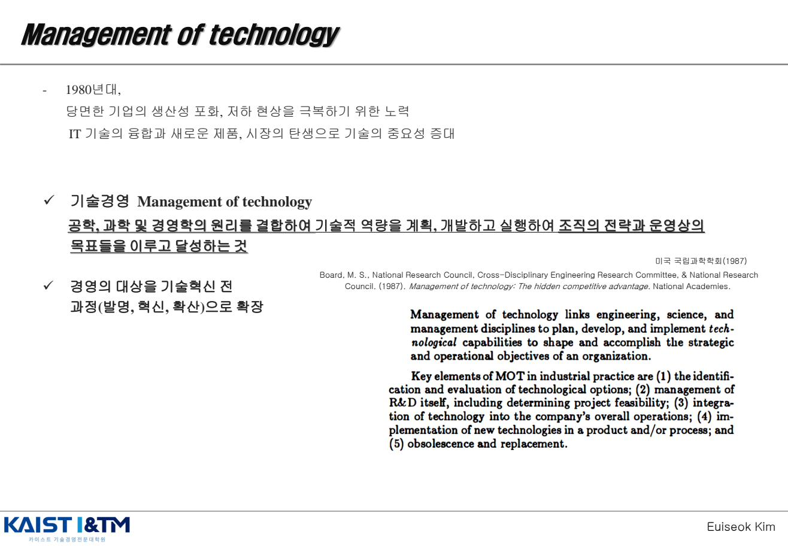
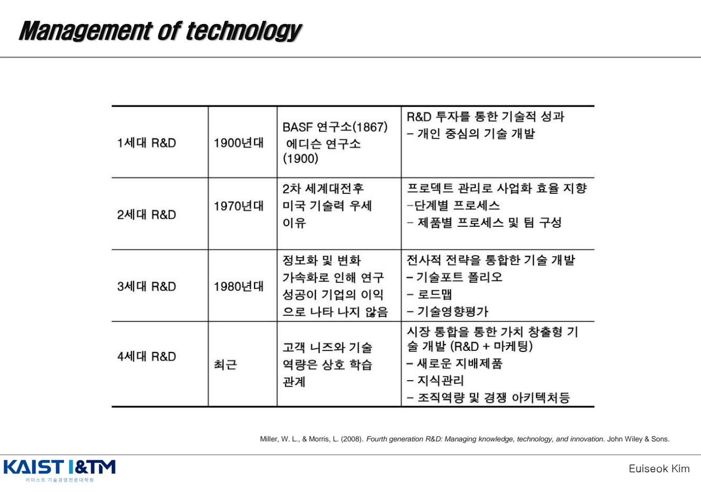
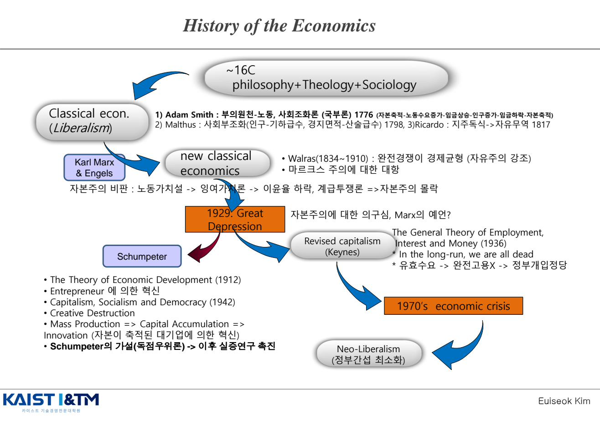
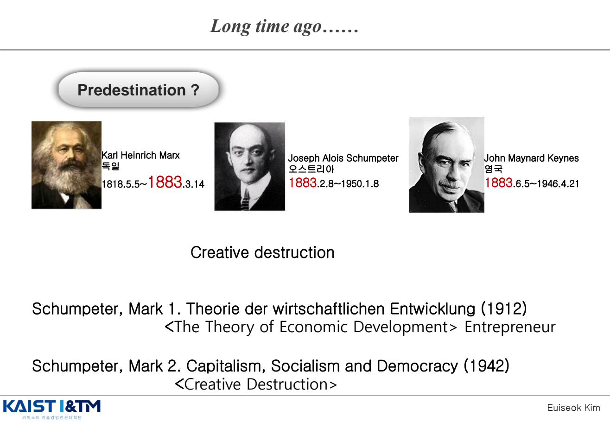
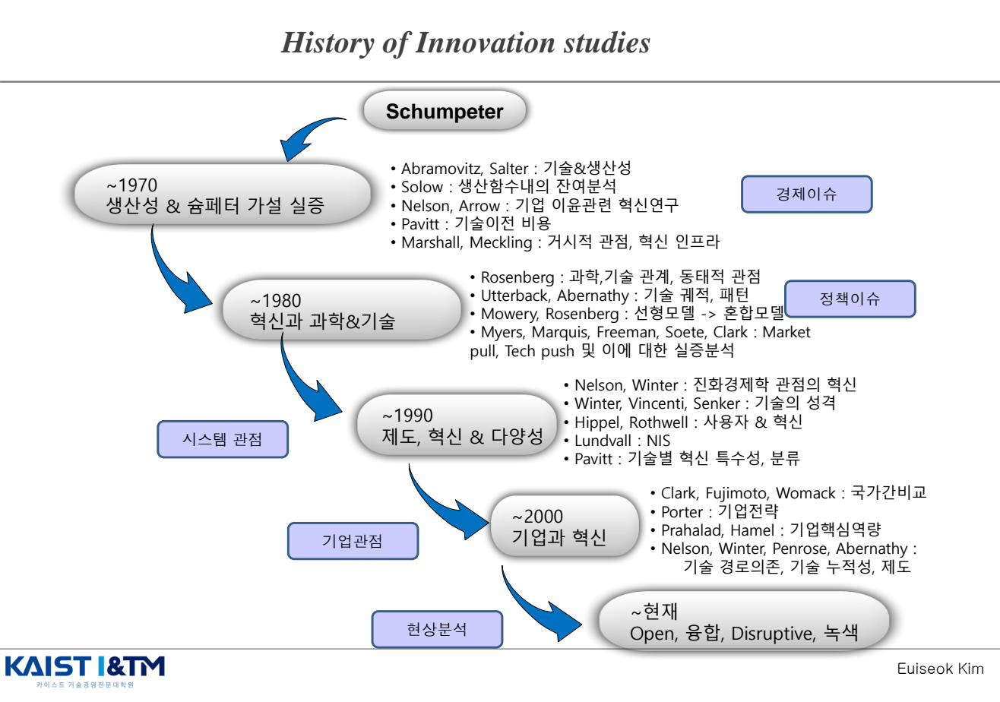

Introduction · 혁신과 기술경영의 출발점
이 챕터는 한 학기 강의 전체의 입구다. "왜 기업은 혁신을 경영해야 하는가", "기술경영(MOT)이란 정확히 무엇을 다루는 학문인가", 그리고 슘페터에서 시작된 혁신 연구의 흐름이 어떻게 진화해 왔는가를 잡는 것이 목표다. 이후 모든 챕터(원천, 유형, 동태, 개방, 확산, 흡수역량, NIS 등)는 여기서 제시된 큰 그림 위에서 가지를 친다.
학습 개요
강의 IM01에서 반드시 풀어 쓸 수 있어야 하는 개념은 다음과 같다.
- 기술경영(Management of Technology)의 정의와 등장 배경
- 경영의 대상이 왜 발명 → 혁신 → 확산 전 과정으로 확장되었는가
- R&D 1~4세대의 진화: 무엇이 바뀌고 왜 바뀌었는가
- 경제학사에서 슘페터의 위치: Marx · Keynes와의 대비, 창조적 파괴
- 혁신 연구(Innovation Studies)의 시기별 흐름: 경제이슈 → 정책이슈 → 시스템 관점 → 기업 관점 → 현재
1. 왜 혁신을 "경영"해야 하는가
강의는 단순한 질문에서 출발한다. "기업의 본질은 무엇인가?" 가장 익숙한 답은 비용 절감(Cost Reduction)과 차별화(Differentiation)다. 그런데 비용 절감(생산 효율 + 관리 효율)과 차별화(제품/서비스 자체의 우월성) 모두 결국 혁신 없이는 한계에 부딪힌다. 같은 산업, 같은 R&D 투자비를 쓰더라도 기업마다 성과가 천차만별인 이유 — 바로 그 차이를 만드는 것이 "혁신의 경영"이다.
핵심 명제
"Why do firms differ?" — 같은 조건 아래에서도 기업 간 성과 차이가 발생하는 이유를 설명하려면, 단순한 자원 투입(R&D 비용)이 아니라 혁신을 어떻게 다루는가를 봐야 한다. 이것이 혁신 경영(Managing Innovation)의 출발점이다.
교재에서는 이를 "The Laws of Innovation" — 지난 100년간 모든 기술과 산업에서 반복적으로 관찰된 혁신의 법칙들 — 이라고 부르며, 이를 체계화한 것이 곧 Innovation Theories이다. 이 강의의 본론(IM02~IM11)은 그 이론들을 하나씩 풀어가는 구조다.
2. 기술경영(Management of Technology, MOT)의 정의
기술경영(Management of Technology)이란, 공학 · 과학 · 경영학의 원리를 결합하여 기술적 역량을 계획 · 개발 · 실행함으로써 조직의 전략적 · 운영적 목표를 달성하는 활동이다.
출처 원문(Board, 1987): "Management of technology links engineering, science, and management disciplines to plan, develop, and implement technological capabilities to shape and accomplish the strategic and operational objectives of an organization."
왜 1980년대에 등장했는가?
- 1980년대 미국 기업들이 직면한 생산성 포화·저하 현상을 극복할 필요
- IT 기술의 융합으로 새로운 제품·시장이 탄생하며 기술의 전략적 중요성이 급증
- 기존의 "R&D 관리"는 너무 좁다 → 발명 · 혁신 · 확산 전 과정을 관리 대상으로 확장

MOT의 5가지 핵심 요소 (Key Elements)
- Identification and evaluation of technological options — 기술적 옵션의 식별과 평가
- Management of R&D itself — R&D 자체의 관리(프로젝트 타당성 결정 포함)
- Integration of technology into the company's overall operations — 기술을 회사 전체 운영에 통합
- Implementation of new technologies — 신기술을 제품과/또는 공정에 실제로 구현
- Obsolescence and replacement — 진부화된 기술의 교체
한 줄 요약
MOT = 공학 + 과학 + 경영학의 결합. 대상은 단일 R&D 프로젝트가 아니라 발명-혁신-확산의 전 사이클.
3. R&D 1세대 ~ 4세대 진화 EXAM
기술경영이 학문으로 자리잡기 전에도 기업은 R&D를 해왔다. 다만 그 형태와 관점이 시대마다 달랐다. Miller & Morris(2008)는 이를 네 세대로 정리한다. 시험에서는 "각 세대의 시대 · 등장 배경 · 특징"을 한 문장씩 풀어 쓸 수 있어야 한다.
| 세대 | 시기 | 등장 배경 | 특징 |
|---|---|---|---|
| 1세대 R&D | 1900년대 | BASF 연구소(1867), 에디슨 연구소(1900) 설립 | R&D 투자를 통한 기술적 성과 — 개인(천재 발명가) 중심의 기술 개발 |
| 2세대 R&D | 1970년대 | 2차 세계대전 후, 미국 기술력 우세 이유 분석 필요 | 프로젝트 관리로 사업화 효율 지향 — 단계별 프로세스, 제품별 프로세스 및 팀 구성 |
| 3세대 R&D | 1980년대 | 정보화·변화 가속화로 연구 성공이 기업 이익으로 직결되지 않음 | 전사적 전략을 통합한 기술 개발 — 기술 포트폴리오, 로드맵, 기술영향평가 |
| 4세대 R&D | 최근 | 고객 니즈와 기술 역량은 상호 학습 관계 | 시장 통합을 통한 가치 창출형 기술 개발 (R&D + 마케팅) — 새로운 지배 제품, 지식 관리, 조직 역량 및 경쟁 아키텍처 |

세대 간 흐름을 한 줄로 잡기
천재 개인 (1세대) → 프로젝트 관리 (2세대) → 전사 전략 통합 (3세대) → 고객·시장과의 학습 (4세대). 핵심은 R&D의 단위(unit of management)가 점점 확장되어 왔다는 점이다. 개인 → 프로젝트 → 회사 전체 → 회사+시장 생태계.
4. 경제학사 속의 혁신 — 왜 슘페터가 중요한가
혁신 이론은 진공 상태에서 등장하지 않았다. 고전경제학(Adam Smith)부터 신고전, 마르크스, 케인즈, 신자유주의로 이어지는 경제사상의 큰 흐름 속에서 슘페터가 차지하는 위치를 이해해야, 왜 슘페터의 "창조적 파괴"가 현대 혁신 연구의 출발점이 되었는지 보인다.

흐름 정리
- 16세기 이전: 경제학은 철학 · 신학 · 사회학과 분리되지 않았음
- 고전경제학(Liberalism): Adam Smith(1776, 국부론) — 자본축적 → 노동수요 증가 → 임금 상승 → 인구 증가 → 임금 하락 → 자본 축적의 순환. Malthus(인구론), Ricardo(자유무역)로 확장
- 마르크스 비판: 노동가치설 → 잉여가치론 → 이윤율 하락 → 계급투쟁 → 자본주의 몰락 예언
- 신고전경제학(new classical): Walras 등 — 완전경쟁이 경제 균형을 만든다(마르크스에 대한 대항)
- 1929 대공황: 자본주의에 대한 의구심 폭발. "Marx의 예언이 맞는 건가?" → 두 사람의 충격적인 답이 등장
- 케인즈의 답: 불황의 원인은 수요 부족. 정부 개입이 필요하다 (수정 자본주의)
- 슘페터의 답: 자본주의의 본질은 정태가 아니라 동태(Dynamism). 핵심 동력은 기업가의 혁신이다
- 1970년대 경제위기 → 신자유주의(Neo-Liberalism)로 회귀(정부 간섭 최소화)
왜 슘페터가 우리 강의의 출발점인가
고전경제학과 신고전경제학은 "완전경쟁시장에서의 정태적 균형"을 가정했다. 슘페터는 정반대로 말한다 — "어느 순간에도 완전경쟁은 존재한 적이 없으며, 자본주의의 본질은 끊임없는 변화(Dynamism)이고 그 동력은 혁신이다." 이 관점 전환이 곧 현대 혁신 연구의 출발점이다.
5. Marx · Schumpeter · Keynes — 동시대의 세 시선
이 세 사람은 우연히도 비슷한 시대를 살았다. 그러나 자본주의를 보는 시각은 극명하게 달랐다.

| Karl Marx | J. A. Schumpeter | J. M. Keynes | |
|---|---|---|---|
| 시대 진단 | 자본주의는 계급투쟁으로 붕괴할 운명 | 자본주의는 끊임없는 창조적 파괴로 진화 | 대공황은 수요 부족이 원인 |
| 핵심 개념 | 노동가치설, 잉여가치, 이윤율 하락 | 신결합 · 창조적 파괴 · 기업가 정신 | 유효수요, 정부의 적극적 경제 관리 |
| 처방 | 혁명(자본주의 전복) | 독점 기업의 장점 인정 + 전유성(특허 등) 보장 | 완전 자유시장은 존재하지 않음 → 정부 개입 |
| 대표 저작 | 자본론 | The Theory of Economic Development(1912, Mark Ⅰ) / Capitalism, Socialism and Democracy(1942, Mark Ⅱ) | The General Theory of Employment, Interest and Money(1936) |
슘페터 저작 두 권의 구분 (시험 빈출)
Mark Ⅰ과 Mark Ⅱ는 슘페터의 두 책을 구분하기 위한 표현일 뿐, 전기·후기로 이론이 달라진 것이 아니다.
- Mark Ⅰ — 경제발전론(1912): 핵심 개념은 신결합(New Combination)과 기업가(Entrepreneur). 작은 기업가의 혁신이 자본주의를 움직인다.
- Mark Ⅱ — 자본주의·사회주의·민주주의(1942): 핵심 개념은 창조적 파괴(Creative Destruction)와 슘페터 가설. 자본이 축적된 대기업이 혁신의 주체가 된다는 관점 추가.
슘페터 가설은 Mark Ⅱ에서 다루어지며, "독점기업과 혁신은 정비례 관계에 있다", "대기업이 중소기업보다 규모에 비례하는 것 이상으로 혁신적이다"는 명제로 요약된다. (자세한 내용은 IM02에서 다룬다)
신결합의 5가지 경우 (Mark Ⅰ)
슘페터는 혁신을 "새로운 결합(New Combination)"으로 정의하며, 다음 5가지를 들었다.
- 새로운 상품의 창출
- 새로운 생산방법의 개발
- 새로운 시장의 개척
- 새로운 원자재 공급원의 발굴
- 새로운 조직의 실현
"아무리 많은 마차를 연결해도 철도가 되지 않는다." — 신결합은 연속이 아니라 비연속적으로 등장한다.
기업가가 신결합을 수행하는 동기 (경제적 이득이 아님!)
- 사적 제국: 자신의 왕국을 건설하고자 하는 몽상과 의지
- 승리하고자 하는 의지, 성공하고자 하는 의욕
- 창조의 기쁨
6. 혁신연구(Innovation Studies)의 흐름
슘페터 이후 혁신 연구는 시기별로 강조점이 달라져 왔다. 이 흐름표는 강의 전체의 지도 역할을 한다. 시험에서 "혁신 연구의 발전 단계"를 묻는 문제가 나오면, 각 시기의 주요 관점(경제/정책/시스템/기업)과 대표 학자를 짝지어 풀어 써야 한다.

| 시기 | 관점 | 핵심 주제 | 대표 학자 |
|---|---|---|---|
| ~ 1970 | 경제 이슈 | 생산성 & 슘페터 가설 실증 | Abramovitz, Salter (기술&생산성), Solow (생산함수 잔여분석), Nelson, Arrow (기업 이윤·혁신), Pavitt (기술이전 비용), Marshall, Meckling (혁신 인프라) |
| ~ 1980 | 정책 이슈 | 혁신과 과학&기술의 관계 | Rosenberg (과학·기술 동태적 관점), Utterback, Abernathy (기술 궤적·패턴 → IM05), Mowery, Rosenberg (선형모델 → 혼합모델), Myers·Marquis·Freeman·Soete·Clark (Market pull, Tech push 실증) |
| ~ 1990 | 시스템 관점 | 제도, 혁신 & 다양성 | Nelson, Winter (진화경제학), Winter·Vincenti·Senker (기술의 성격), Hippel, Rothwell (사용자 혁신), Lundvall (NIS → IM11), Pavitt (기술별 혁신 특수성·분류 → IM04) |
| ~ 2000 | 기업 관점 | 기업과 혁신 | Clark·Fujimoto·Womack (국가간 비교), Porter (기업전략), Prahalad, Hamel (핵심역량 → IM06), Nelson·Winter·Penrose·Abernathy (경로의존, 기술 누적성, 제도) |
| ~ 현재 | 현상 분석 | Open · 융합 · Disruptive · 녹색 | Chesbrough(Open Innovation → IM06), Christensen(Disruptive → IM07), Cohen & Levinthal(Absorptive Capacity → IM09), Teece(PFI → IM09) |
흐름의 큰 그림
경제 → 정책 → 시스템 → 기업 → 현상. 즉, 처음에는 "혁신이 경제 성장에 얼마나 기여하는가"를 거시적으로 분석하다가, 점차 "국가는 어떻게 혁신을 키울 것인가", "혁신은 시스템적 상호작용이다", "기업 차원에서 혁신을 어떻게 다룰 것인가"를 거쳐, 현재는 "개방·융합·파괴·녹색"이라는 구체적 현상에 집중하고 있다. 각 챕터는 이 지도 위 어디쯤에 자리잡고 있는지 의식하며 공부하면 좋다.
예상 문제 매칭
업로드된 「예상 문제 정리」에서 IM01 범위와 직접 연결되는 항목들이다. 본문 개념과 함께 풀어 쓸 수 있도록 정리했다.
📌 예상문제 #1 영역 — 기술경영(MOT)의 정의와 등장 배경
"기술경영(Management of Technology)을 정의하고, 그 등장 배경을 서술하시오."
답안 핵심 포인트:
- 정의(미국 국립과학학회, 1987): 공학·과학·경영학의 원리를 결합하여 기술적 역량을 계획·개발·실행함으로써 조직의 전략적·운영적 목표를 달성하는 활동.
- 등장 배경: 1980년대 미국 기업의 생산성 포화·저하 + IT 융합에 따른 기술 중요성 증대.
- 대상의 확장: 단일 R&D 관리에 머무르지 않고 발명 → 혁신 → 확산의 전 과정을 관리 대상으로 포함.
📌 예상문제 #2 영역 — 혁신의 원천과 슘페터 가설
"슘페터의 Mark Ⅰ과 Mark Ⅱ를 구분하여 설명하고, 신결합의 5가지 경우와 기업가의 동기를 서술하시오."
답안 핵심 포인트:
- Mark Ⅰ과 Ⅱ는 책 구분일 뿐 이론이 갈라진 것은 아님. Mark Ⅰ(1912, 경제발전론) = 신결합·기업가 / Mark Ⅱ(1942, 자본주의 사회주의 민주주의) = 창조적 파괴·슘페터 가설.
- 신결합 5가지: 새로운 상품, 생산방법, 시장, 원자재 공급원, 조직. "마차를 아무리 연결해도 철도가 되지 않는다" — 비연속적이라는 점이 핵심.
- 기업가의 동기 3가지: 사적 제국(왕국 건설 욕구), 승리·성공 의지, 창조의 기쁨. 경제적 이득이 아니라는 점이 중요.
- 창조적 파괴(Mark Ⅱ): 낡은 것을 끊임없이 파괴하고 새로운 것을 창조하여 내부에서 경제구조를 혁명화하는 과정. 곧 현대적 의미의 "혁신"에 가장 가깝다.
- 슘페터 가설 핵심 논리: 완전경쟁은 불가능 → 불완전경쟁 상태에서 혁신하기 위해서는 독점의 장점과 전유성을 인정해야 한다.
📌 보조 — 혁신연구의 시기별 흐름
"혁신 연구의 발전 단계를 시기·관점·대표 학자를 들어 설명하시오." 또는 특정 학자(예: Lundvall, Pavitt, Christensen)가 어느 시기·관점에 해당하는지 묻는 문제로 변형 가능.
위 "6. 혁신연구의 흐름" 표를 그대로 인출하면 된다. 시기 → 관점 → 핵심 주제 → 학자 순으로 짝지어 쓰면 안전하다.
※ 이 페이지의 모든 그림은 강의자료 IM01_intro.pdf 에서 발췌한 것이며, 학습 목적으로만 사용된다.